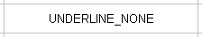
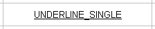
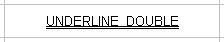
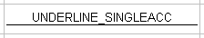
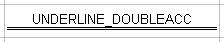

Font class reference
-
int size() const
返回字体的大小，以点为单位。
-
void setSize(int size)
设置字体的大小，以点为单位。
-
bool italic() const
返回字体是否为斜体。
-
void setItalic(bool italic = true)
开启/关闭斜体字。
-
bool strikeOut() const
返回字体是否为删除线。
-
void setStrikeOut(bool strikeOut = true)
开启/关闭删除字。
-
Color color() const
-
void setColor(Color color)
-
bool bold() const
返回字体是否为粗体。
-
void setBold(bool bold = true)
开启/关闭粗体字。
-
Script script() const
返回字体的脚本样式。
-
void setScript(Script script)
设置字体的脚本样式。
| 脚本值 | 视图 |
| SCRIPT_NORMAL | TEXT SCRIPT_NORMAL |
| SCRIPT_SUPER | TEXTSCRIPT_SUPER |
| SCRIPT_SUB | TEXTSCRIPT_SUB |
-
Underline underline() const
返回字体的下划线样式。
-
void setUnderline(Underline underline)
设置字体的下划线样式。
| 下划线值 | 视图 |
| UNDERLINE_NONE |  |
| UNDERLINE_SINGLE |  |
| UNDERLINE_DOUBLE |  |
| UNDERLINE_SINGLEACC |  |
| UNDERLINE_DOUBLEACC |  |
-
const wchar_t* name() const
返回字体的名称。
-
bool setName(const wchar_t* name)
设置字体的名称。默认名称为 "Arial"。
|